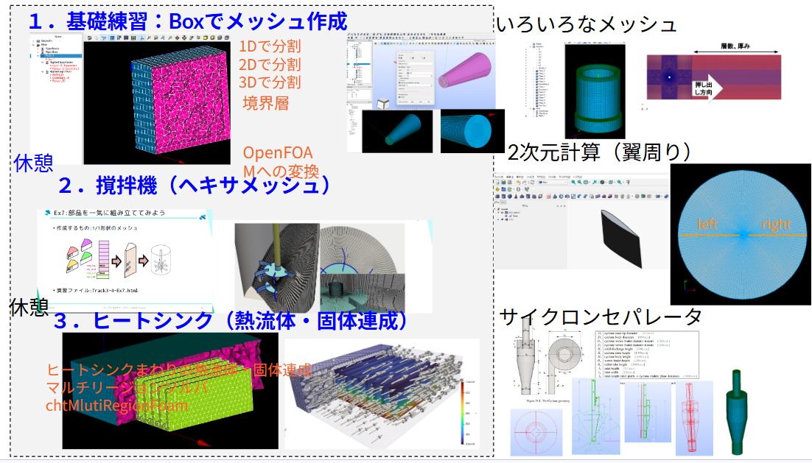

SALOME 9.15 を使って OpenFOAM 用のメッシュを作成する。
| 配布元 | URL | 特徴 |
|---|---|---|
| Code_Aster 付属版 | https://www.code-aster.org/ | 構造解析ソフト Code_Aster とセット。通常はこちら |
| Salome Platform（EDF） | https://www.salome-platform.org/ | 開発元フランス電力 EDF のサイト。Code_Aster は含まないが最新版を入手可能 |
この講義では SALOME を使って OpenFOAM 用メッシュを作成するスキルを段階的に習得する。

| ステップ | 演習 | 学ぶこと | ファイル |
|---|---|---|---|
| 0 | SALOME導入 | SALOME の概要・モジュール・OpenFOAM との連携 | 000_salome.html |
| 1 | 基礎練習（Box） | SALOME の基本操作・境界層・OpenFOAM 変換 | 001_box.html |
| 2 | 撹拌機 | ヘキサメッシュで複雑形状を作成する方法 | 002_stirrer.html |
| 3 | ヒートシンク | マルチリージョンメッシュ・熱流体固体連成 | 003_heatsink.html |
到達目標
slides.html — 全体をreveal.jsのスライドでまとめたもの。